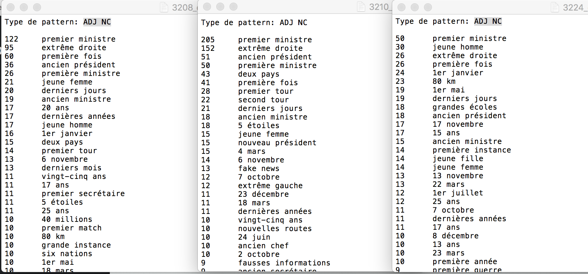
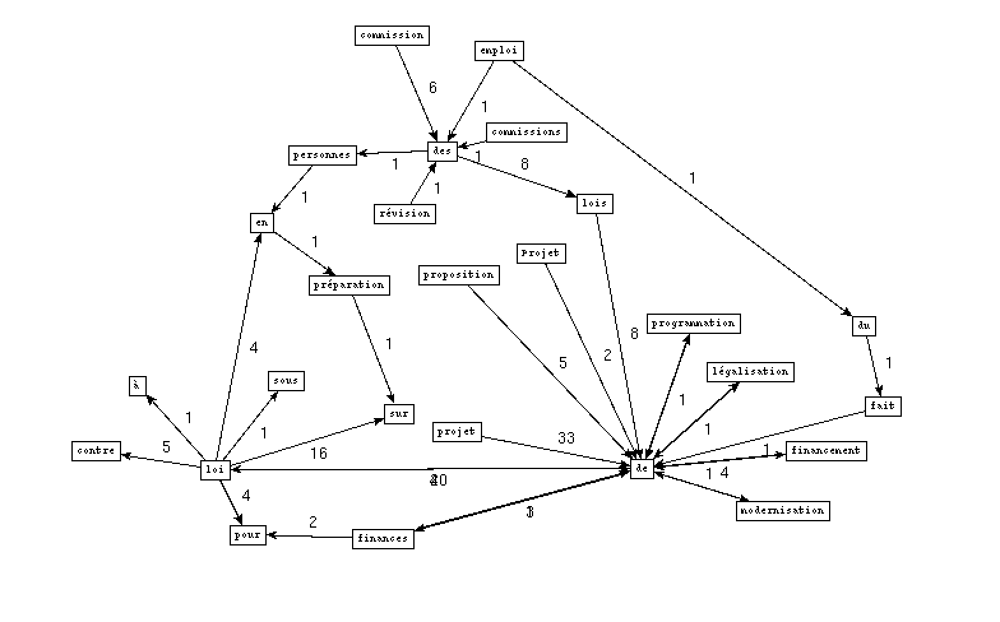

Projet Encadré M1 TAL Semestre 2
Ce site a été créé pour présenter le projet du cours Programmation et Projet Encadré 2 en Master TAL Traitement Automatique des Langues (formation collaborée entre l'INALCO, l’université Paris 10 Nanterre et l’université Sorbonne Nouvelle Paris 3).
Merci à Serge FLEURY et Jean-Michel DAUBE qui nous ont encadré tout au long de ce semestre.
Projet
Mise en oeuvre d'une chaîne de traitement textuel semi-automatique, depuis la récupération des données jusqu'à leur présentation. Ce projet posera d'abord la question des objectifs linguistiques à atteindre et fera appel aux méthodes et outils informatiques nécessaires à leur réalisation (récupération de corpus, normalisation des textes, segmentation, étiquetage, extraction, structuration et présentation des résultats...).
Nous traitons ici une arborescence de fils RSS du journal Le Monde, recueillis tous les jours de l'année 2018 à 19h. L'arborescence contient un répertoire pour chaque mois de l'année, dans lesquels se trouvent autant de dossiers que de jours. Au sein de ces répertoires de jour, on trouve les fichiers qui nous intéressent : les flux RSS de chaque rubrique, au format .xml. Les différentes rubriques sont celles du Monde (à la une, international, culture etc.) et ont chacune un identifiant, ce qui permet d'identifier aisément les différents fichiers de flux RSS.
Ici nous avons choisi les rubriques À la Une (3208), International (3210) et France (3224), et nous présentons 4 boîtes à outils:Bao1
Extraire les contenus textuels des fils RSS de l'arborescence : les contenus des balises title et description.
Deux méthodes différentes pour traiter des données textuelles :
- 1. La première considère le texte comme un "sacs de caractères" dans lequel on va essayer de repérer certaines régularités (via les regexep)
Le script Perl+RegExp : Cliquez ici pour télécharger le script
La partie d'extraction par l'expression régulière
Voici un aperçu des fichiers d'output txt et xml:
Les fichers d'output de Perl+RegExp : Fichier de sortie txt 3208, Fichier de sortie xml 3208, Fichier de sortie txt 3210, Fichier de sortie xml 3210, Fichier de sortie txt 3224, Fichier de sortie xml 3224
- 2. La seconde prend en considération la structuration logique du texte (un arbre) et sa modélisation dans un programme pour au final n'avoir qu'à "cueillir" les feuilles textuelles visées ! (https://metacpan.org/pod/XML::RSS)
Le script Perl+XML::RSS : Cliquez ici pour télécharger le script
La partie d'extraction par XML::RSS
Les fichers d'output de Perl+XML::RSS : Fichier de sortie txt 3208, Fichier de sortie xml 3208, Fichier de sortie txt 3210, Fichier de sortie xml 3210, Fichier de sortie txt 3224, Fichier de sortie xml 3224
Bao2
Étiquetage. Une fois les données textuelles obtenues, il faut les étiquetter (forme, POS, lemme) pour pouvoir les traiter de manière syntaxique. Nous avons utilisé 2 méthodes d'étiquetage : TreeTagger et Talismane.
L'utilisation de TreeTagger et de Talismane a été incorporée dans les scripts d'extraction. Une procédure d'étiquetage (pour chaque outil) a été rajoutée. Les scripts donnent maintenant en sortie un fichier texte et un fichier XML avec les textes étiquetés. L'étiquetage intervient après le nettoyage et fait intervenir de nombreux fichiers intermédiaires (des fichers temps).
- 1. TreeTagger:
Voici un aperçu du fichier d'output de tree-tagger: (les fichiers sont téléchargeables en dessous)
- 2. Talismane:
Voici un aperçu du fichier d'output de talismane et le fichier converti en xml:
- Les fichiers d'output Bao2 :
Bao3
Extraction de patrons syntaxiques. Grâce à l'étiquetage réalisé à l'étape précédente, on va pouvoir extraire des schémas pertinents pour trouver la terminologie spécifique à une rubrique.
Le choix des patrons à extraire est primordial pour obtenir des termes pertinents. Les noms, les adjectifs et les verbes seront les termes clés que nous allons observer. Les patrons que nous avons extraits sont NOM PREP NOM PREP, VERBE DET NOM, NOM ADJ, et ADJ NOM.
Pour le faire, on peut adopter plusieurs méthodes. Ici nous avons essayé les méthodes de Perl, XSLT/Xpath, et Xquery(avec BaseX).
- 1. Perl
Voici une comparaison de résultat entre des rubriques du patron ADJ NC:

Voici une comparaison de résultat entre des rubriques du patron NC ADJ:
Voici une comparaison de résultat entre des rubriques du patron V DET NC:
Voici une comparaison de résultat entre des rubriques du patron NC PREP NC PREP:
- 2. XSLT/Xpath
Nous avons construit une feuille de styles XSLT pour extraire des patrons:
- 3. Xquery(BaseX)
Nous avons construit une requête xquery par patron, et les avons appliqués sur les 3 rubriques 3208, 3210, et 3224.
À noter : nous avons remarqué un problème d'étiquetage du Tree-tagger pour le déterminant "l'", parfois ce token a été taggé comme ADJ. Ainsi les résultat pour les patrons ADJ NOM et NOM ADJ sont compromis.
Bao4
Représentation graphique. La dernière étape consiste à représenter de manière plus visuelle les résultats obtenus grâce à la boîte à outils 3. Il faudra de plus choisir un angle d'approche pertinent (car tous les résultats ne pourront pas être représentés).
Nous avons choisi des motifs différents pour chaque rubrique, et les avons appliqués sur les outputs des patrons VER DET NOM et NOM PREP NOM PREP (résultats de Bao3)
- Pour la rubrique À la Une, nous avons choisi le mot 'éléction' comme le motif:
- Output VER DET NOM:
- Output NOM PREP NOM PREP:
- Pour la rubrique International, nous avons choisi le mot 'mouvement' comme le motif:
- Output VER DET NOM:
- Output NOM PREP NOM PREP:
- Pour la rubrique France, nous avons choisi le mot 'loi' comme le motif:
- Output VER DET NOM:
- Output NOM PREP NOM PREP:

Conclusion
À travers ce projet, nous avons pu découvrir les façons de la récupération des données et les outils différents du traitement de texte. Et nous avons remarqué que le Talismane est un outil plus performant que le Tree-Tagger en ce qui concerne l'étiquetage du français, puisque le "l'" est souvent maltaggé par Tree-tagger.
Comme le programme de Bao2 tourne pendant des heures, nous avons également remarqué que la partie d'étiquetage Talismane prendra beaucoup moins de temps (6 à 8 min pour une rubrique) si on mettait la concatenation pour talismane dans un seul fichier txt et lancait seulement une fois le Talismane pour l'étiquetage de tout le contenu d'une rubrique.
Les résultats triés de Bao3 sont intéressent, comme ce qui est montré dans le patron NOM ADJ des rubriques À la Une 3208 et France 3224, le bigramme le plus courrent est 'gilets jaunes', ce qui montre le poid de ce mouvement aux yeux des journalistes du Monde. D'ailleurs, comme nous avons choisi 3 rubriques assez proches, il y avait aussi des contenus croisés entre des rubriques.
À propos
Nous sommes deux étudiantes en première année de Master TAL à Inalco.
Ce site présente le résultat de notre projet. Vous pouvez parcourir nos scripts, ainsi que les différents résultats réalisés avec des outils variés.
Un grand merci à nos professeurs Serge Fleury et Jean-Michel Daube pour tous leurs conseils et leur aide pour le projet.
Bonne visite !
Siyu WANG et Lara DUNUAN